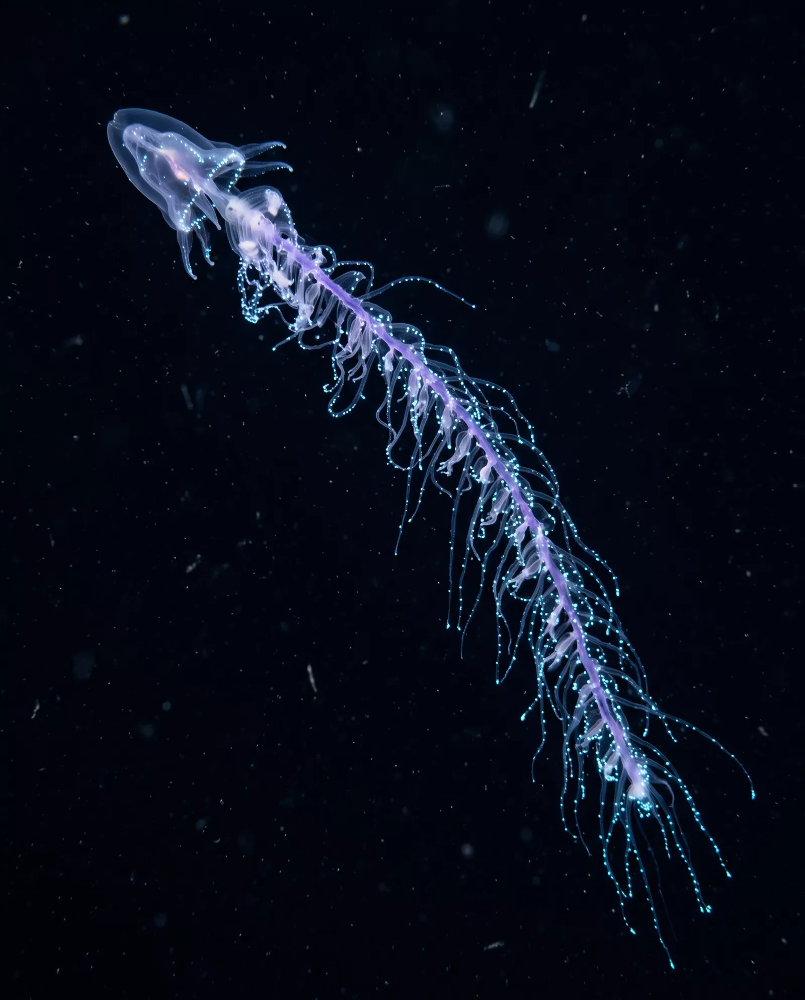

ABYSSAL
The ocean's average depth is 3,700 metres. We have better maps of Mars than of the water that covers our own planet. This page is a dive. Everything below you is real.
We go where light gives up.
Below 200 metres, sunlight thins to a blue rumour. Below 1,000, it is gone entirely — and yet this is the largest habitat on Earth, holding more animal life than every forest, plain and reef combined.
ABYSSAL operates two research vessels and the crewed submersible HALCYON-9 to census that darkness: who lives there, how they make their own light, and what they can teach us before the deep changes faster than we can read it.
Every night, the deep rises.
After sunset, billions of twilight-zone animals swim hundreds of metres up to feed near the surface, then sink again before dawn — the largest migration on the planet, happening every single day, almost entirely unseen.
Lanternfish
Small, silver, and possibly the most abundant vertebrate family on Earth. Rows of photophores along their bellies erase their silhouettes against the dim light above.
Vampire Squid
Neither vampire nor true squid. When threatened it inverts its webbed arms over its body and ejects a cloud of glowing mucus instead of ink — there is no point in ink where there is no light.
Giant Siphonophore
A drifting colonial chain that can exceed 40 metres — longer than a blue whale. Not one animal but thousands of specialised bodies acting as a single, luminous fishing line.
Here, light is a language.
An estimated three-quarters of midnight-zone animals make their own light. They flash to court, to startle, to lie. The crown jelly Atolla wyvillei spins a wheel of blue alarm-light when attacked — a burglar alarm meant to summon something large enough to eat its attacker.
The jellies drifting past this panel are drawn by our instruments in real time: a pulsing bell, trailing tentacles, and a soft halo of borrowed bioluminescence. Watch them long enough and the pulse starts to look like breathing. It is.
HALCYON-9 · EXTERNAL CAM 2 · LIGHTS OFF · SPECIMENS UNDISTURBED

The last light down here is a lure.
Meet the humpback anglerfish, Melanocetus johnsonii. In a place with no sun, she carries her own: a rod grown from her forehead, tipped with a bulb of luminous bacteria. Whatever swims toward that little star is already inside her strike radius.
Move your cursor. That glow following you through the dark is her lure. Nothing personal — at 4,000 metres, curiosity and hunger are the same instinct.
Expedition 27 departs this autumn to survey the abyssal plain of the Puerto Rico Trench system. Twelve dives. Six berths for visiting researchers and one for a science communicator. The deep does not come to you.
Request Expedition Briefing